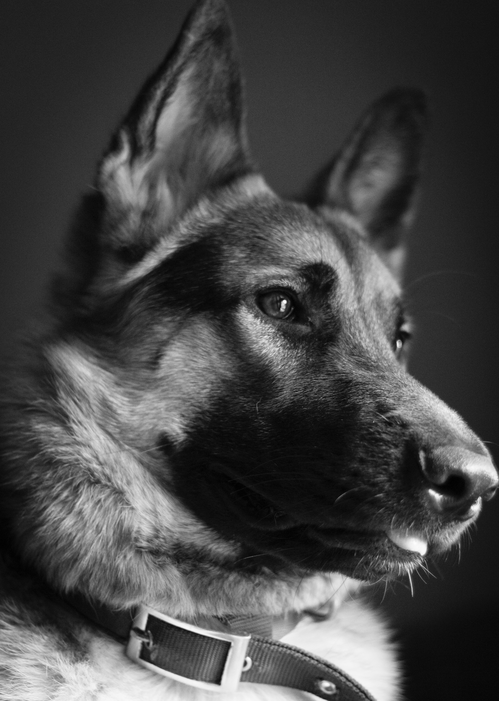

Welcome to my New Dog Website!
7 Essential Commands Your Dog Needs to Know.
When you get a new dog, whether it's a puppy or an adult rescue, she probably needs some obedience training. More specifically, a well-behaved pup should respond to seven directions in order to become a good canine citizen: Sit, Down, Stay, Come, Heel, Off, and No.

Are you prepared to begin training your puppy or dog? Your dog's basic requirements include proper training and socialisation. It's important to get your dog started on training as soon as possible.
Dog training can be intimidating at first, particularly if this is your first dog. The reality is that educating your dog is a significant undertaking. You will find the challenge to be much less challenging if you take it step by step. To get you started, here's some information:
-
Start a Dog Obedience Program: Learn how to set a basic foundation before you begin to train your dog
-
Your Dog Using Games: Training your dog should be fun! Everyone knows it's easier to learn when you are having a good time, so try implementing some games into your dog training regimen.
-
Weeks to a Well-Trained Dog: Using this schedule as a guide, you can teach your dog the basics in about six weeks.
-
Positive Reinforcement: There are many different ways to train a dog, but most dog professionals agree that the positive way is the best for both the dog and trainer.

Unless you plan to keep your dog outdoors--and few of us do because it's not recommended--you'll need to teach your dog where to eliminate. Therefore, house training (also called housebreaking or potty training) is one of the first things you need to work on with your dog. Crate training can be a very helpful part of the training process.
This includes house training as well as many other areas of training:
- Crate Training Dogs and Puppies: Here are the basics of training your dog or puppy to accept and even enjoy the crate. Not only will it help with housebreaking, but it will also give your dog a place of his own.
- How to House Train your Dog: When it comes down to it, house training is not that complicated, but this doesn't mean it's easy. Consistency and diligence are key during the housebreaking process.
- Submissive/Excitement Urination in Dogs: If your dog is still having accidents in the house, it may be more than a simple housebreaking issue. Your dog might urinate out of excitement or to express submissive behavior.
-
Leash Training Dogs and Puppies
Every dog needs to learn to walk on a leash. Besides the fact that most areas have leash laws, there will be times when keeping your dog on a leash is for his own safety. Learn how to introduce your dog or puppy to the leash, then teach him how to walk properly on the leash, even beside you on a bike. A loose leash walk teaches your dog not to pull or lunge when on the leash, making the experience more enjoyable for both you and your dog.
- How To Socialize Dogs and Puppies
Socialization means training your puppy or adult dog to accept new people, animals, and various places by exposing him to these things. Socialized dogs are less likely to develop behavior problems and are generally more welcomed by others. Socialization can also help prevent the development of fears and phobias.
The bottom line is that socializing your dog or puppy will make him a happier, more well-behaved dog.
- Clicker Training for Dogs
Clicker training, a common form of positive reinforcement, is a simple and effective dog training method. Although it is still fine to train your dog without clicker training, many people find it helpful. With clicker training, you can easily and effectively teach your dog all kinds of basic and advanced commands and tricks. It's fast and easy to learn how to clicker train your dog
-
Basic Commands and Fun Tricks
There are some basic dog training commands and dog tricks that every dog should know like come, speak, drop it, stay, back up, etc. Basic commands give your dog structure. In addition, they can help you overcome common dog behavior problems and will help keep your dog safe.